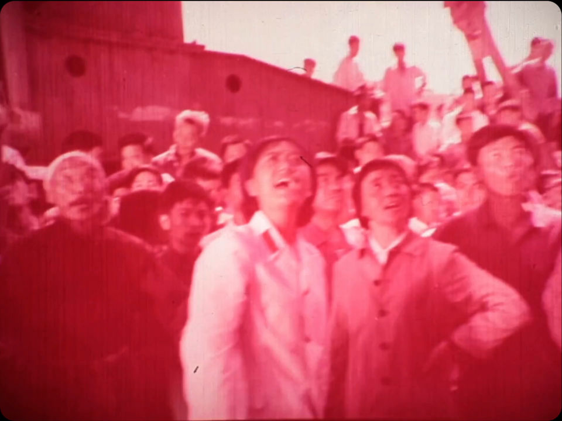
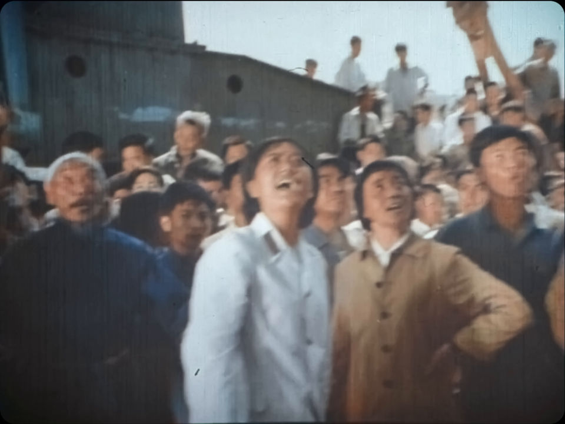
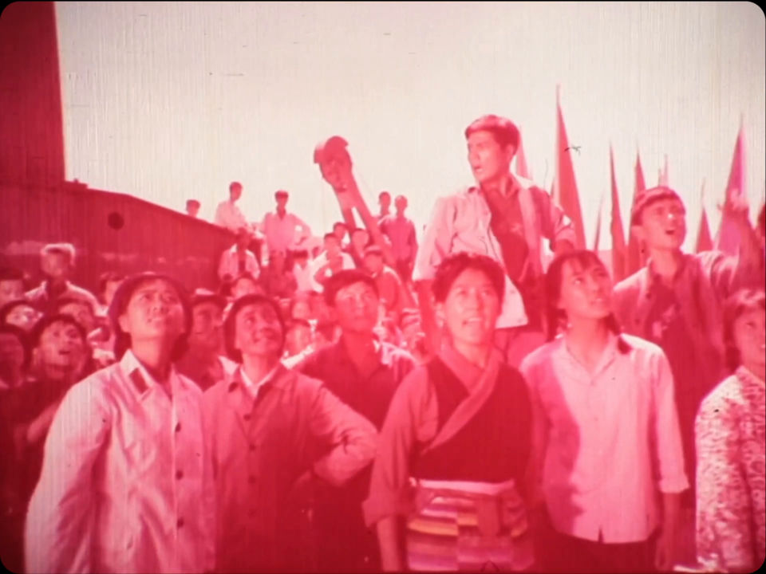
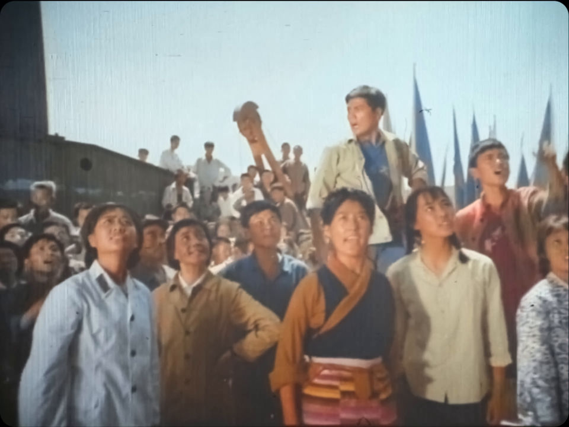
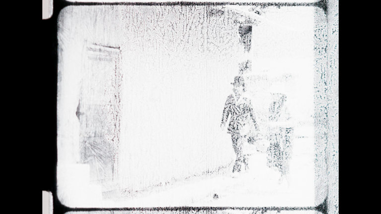
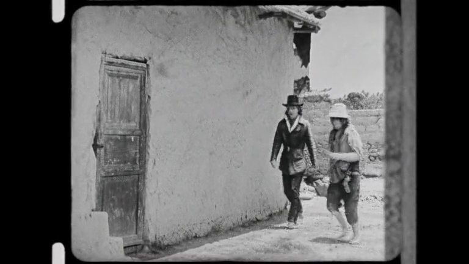
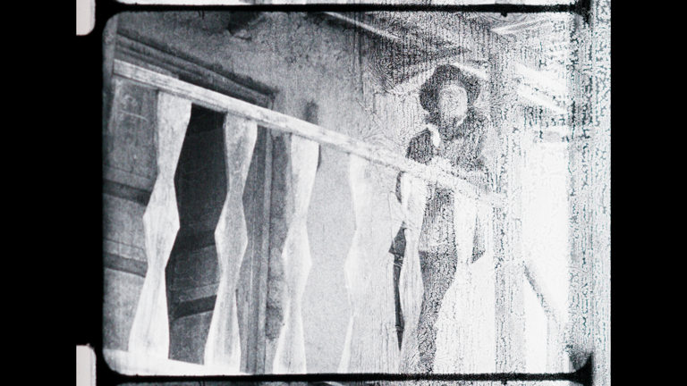
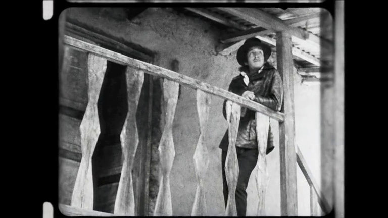

One Local AI Pipeline for
Restoring Faded and Damaged Film
The models only fill what is lost.
Keep the scan. Check the whole shot. Record what came from the film and what was generated.
Keep the picture. Infer the colour.
Build colour references from the faded scan. Carry them through the shot, then keep only the chroma. The original luma stays.




Model chroma across the whole frame. It is an interpretation, not proof of the film’s original colour.
H3 + Fun ControlNet supplied aligned teachers for the Temporal CbCr adapter. Some shadow tint remains.
When the picture cannot be kept.
A damaged 16mm print and a soft telecine guide the reconstruction. The model rebuilds the picture; fine detail is inferred.




Generated picture across the whole frame. Q47 includes tone blending and dissolves at section joins.
The approved output is 768 × 432. Its reference stills were made with ChatGPT Images, so this example is not local from end to end.
03 / One local pipeline is the aim.
These are workflow demonstrations, not finished restorations.
1. Start from the scan
Keep surviving picture and compare other elements.
2. Constrain the model
Hard Canny is the default geometry control. Check references.
3. Limit the repair
Use masks for damaged areas and surrounding frames for gaps.
4. Review + document
Keep source, masks, settings and generated regions separate.
Masking versus recovery
Concealing damage does not bring back lost evidence. Selective healing keeps usable picture outside the repair mask. Full reconstruction is a different choice.
What still needs work
Flicker, geometry drift, invented detail, reduced resolution and slow runs. Next: higher resolution, longer shots and fewer manual steps, with the restorer deciding.

Talk + examples